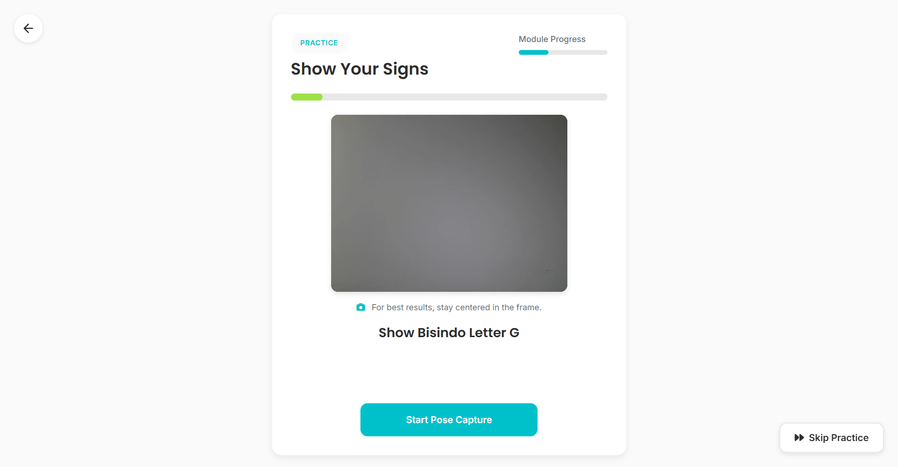
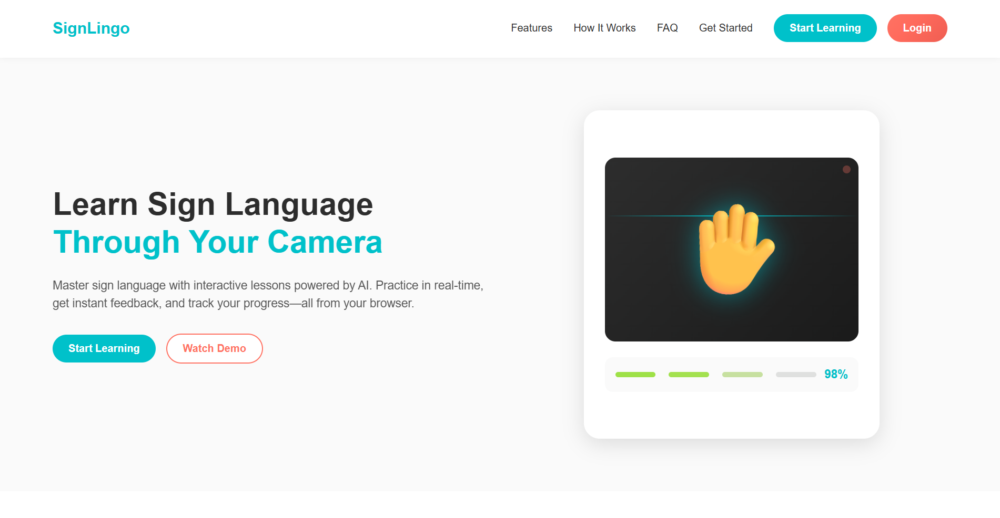
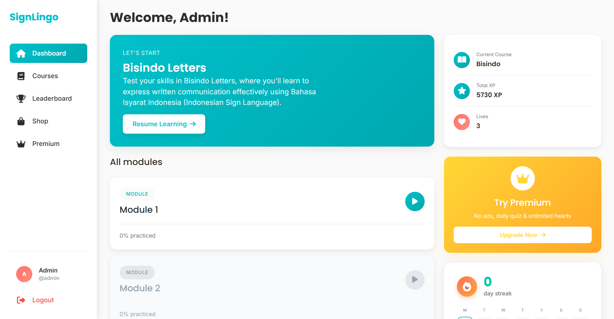

An interactive, gamified educational web application that makes sign language accessible by blending structured video modules, image-based quizzes, and real-time computer vision models for webcam gesture recognition.

Learning a spatial-visual language like sign language traditionally suffers from a lack of immediate correction. SignLingo addresses this disconnect by shifting sign language learning away from passive video-watching into an interactive environment.
The web application coordinates structured text and media assets with a real-time, browser-driven machine learning pipeline. This structure gives students instantaneous evaluation scores on their hand configurations and tracks their daily engagement milestones through automated persistence layers.
To maintain high user retention, the application implements an array of student engagement features and responsive styling definitions:
OpenCV and MediaPipe behind a TensorFlow/Keras backbone to capture webcam frames
and evaluate custom BISINDO gesture structures instantly.
Completed, Current, Not Started) coupled with a backend-validated daily streak system to build consistent habits.
As a Frontend & Integration Developer on this collaborative engineering team, my responsibilities sat at the intersection of client-side design and secure server communication:


The presentation layer connects directly to a structured, modular Flask micro-framework backend.
Application pathways are organized using decoupled Flask Blueprints (such as auth_bp) to keep routing separate from
core configuration spaces.
Data states are mapped to an SQLite database layer instance via an SQLAlchemy ORM manager, utilizing
Flask-Migrate schemas to run transactional database migrations cleanly.
Furthermore, the app includes custom automated CLI shell initializers (init-app) to wipe, reset,
and seed database rows with lessons and inventory catalogs from structural JSON definitions.
It also configures robust verification systems via secure SMTP transport layers (Flask-Mail) to safely manage password retrieval.